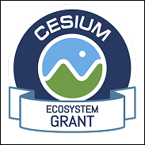

<!doctype html>
<html lang="en">
  <head>
    <meta charset="UTF-8" />
    <link rel="icon" href="./favicon.png" type="image/png" />
    <meta name="viewport" content="width=device-width, initial-scale=1.0" />
    <title>Planetary Parfait — Immersive Planetary Exploration</title>
    <meta name="description" content="Collaborative planetary exploration in augmented and virtual reality, powered by JMARS.">
    <link rel="preconnect" href="https://fonts.googleapis.com" />
    <link rel="preconnect" href="https://fonts.gstatic.com" crossorigin />
    <link href="https://fonts.googleapis.com/css2?family=JetBrains+Mono:wght@300;400;500&family=Space+Grotesk:wght@400;500;600;700&display=swap" rel="stylesheet" />
    <meta name="author" content="Lovable" />

    <!-- TODO: Update og:title to match your application name -->
    
    
    <meta property="og:type" content="website" />
    <meta property="og:image" content="https://pub-bb2e103a32db4e198524a2e9ed8f35b4.r2.dev/70daeda1-ee9a-4c89-9a66-c03219fea11a/id-preview-b83a4ca1--d1ca14be-2344-439c-9416-8351cf800b2e.lovable.app-1771610313364.png">

    <meta name="twitter:card" content="summary_large_image" />
    <meta name="twitter:site" content="@Lovable" />
    <meta name="twitter:image" content="https://pub-bb2e103a32db4e198524a2e9ed8f35b4.r2.dev/70daeda1-ee9a-4c89-9a66-c03219fea11a/id-preview-b83a4ca1--d1ca14be-2344-439c-9416-8351cf800b2e.lovable.app-1771610313364.png">
    <meta property="og:title" content="Planetary Parfait — Immersive Planetary Exploration">
  <meta name="twitter:title" content="Planetary Parfait — Immersive Planetary Exploration">
  <meta property="og:description" content="Collaborative planetary exploration in augmented and virtual reality, powered by JMARS.">
  <meta name="twitter:description" content="Collaborative planetary exploration in augmented and virtual reality, powered by JMARS.">
  <script type="module" crossorigin src="./assets/index-DYXHhjIz.js?v=4"></script>
  <link rel="stylesheet" crossorigin href="./assets/index-Dbg-GapP.css">
  <style>
    .featured-nasa-video {
      background:
        radial-gradient(circle at 50% 0%, hsl(175 70% 45% / 0.13), transparent 42%),
        hsl(var(--background));
    }

    .featured-nasa-video .section-line {
      display: none;
    }

    .featured-nasa-video > div {
      max-width: 76rem !important;
      padding-top: 6rem !important;
      padding-bottom: 7rem !important;
    }

    .featured-nasa-video .featured-video-intro {
      max-width: 54rem;
      margin: 0 auto 2.5rem;
      text-align: center;
    }

    .featured-nasa-video .featured-video-kicker {
      margin-bottom: 1rem;
      color: hsl(var(--primary));
      font-family: "JetBrains Mono", monospace;
      font-size: 0.7rem;
      letter-spacing: 0.2em;
    }

    .featured-nasa-video h2 {
      margin-bottom: 1rem;
      color: hsl(var(--foreground));
      font-family: "Space Grotesk", sans-serif;
      font-size: clamp(2rem, 5vw, 3.5rem);
      font-weight: 600;
      line-height: 1.05;
    }

    .featured-nasa-video .featured-video-copy {
      color: hsl(var(--muted-foreground));
      font-size: clamp(1rem, 2vw, 1.2rem);
      line-height: 1.7;
    }

    .featured-nasa-video .featured-video-copy strong {
      color: hsl(var(--foreground));
      font-weight: 600;
    }

    .featured-nasa-video .aspect-video {
      border-color: hsl(var(--primary) / 0.45) !important;
      box-shadow: 0 0 70px hsl(var(--primary) / 0.13);
    }

    .featured-nasa-video .collaboration-callout {
      max-width: 64rem;
      margin: 3.5rem auto 0;
      padding: clamp(1.75rem, 4vw, 3rem);
      border: 1px solid hsl(var(--primary) / 0.28);
      border-radius: 0.5rem;
      background: hsl(var(--card) / 0.72);
      text-align: left;
    }

    .featured-nasa-video .collaboration-callout p {
      color: hsl(var(--muted-foreground));
      font-size: clamp(1rem, 1.7vw, 1.12rem);
      line-height: 1.75;
    }

    .featured-nasa-video .collaboration-callout p + p {
      margin-top: 1.25rem;
    }

    .featured-nasa-video .collaboration-callout strong {
      color: hsl(var(--foreground));
      font-weight: 600;
    }

    .featured-nasa-video .collaboration-callout .collaboration-heading {
      color: hsl(var(--primary));
      font-family: "JetBrains Mono", monospace;
      font-size: 0.75rem;
      letter-spacing: 0.2em;
    }

    .featured-nasa-video .collaboration-button {
      display: inline-flex;
      align-items: center;
      justify-content: center;
      margin-top: 1.75rem;
      padding: 0.9rem 1.4rem;
      border: 1px solid hsl(var(--primary) / 0.65);
      border-radius: 0.3rem;
      background: hsl(var(--primary) / 0.1);
      color: hsl(var(--primary));
      font-family: "JetBrains Mono", monospace;
      font-size: 0.75rem;
      letter-spacing: 0.16em;
      text-transform: uppercase;
      transition: background 160ms ease, border-color 160ms ease;
    }

    .featured-nasa-video .collaboration-button:hover {
      border-color: hsl(var(--primary));
      background: hsl(var(--primary) / 0.18);
    }

    .jmars-tutorial-link {
      margin-top: 2rem !important;
    }

    .jmars-integration-copy strong {
      color: hsl(var(--foreground));
      font-weight: 600;
    }

    .spatial-context-module,
    .layered-data-module,
    .jmars-integration-module,
    .cesium-grant-module {
      border-bottom: 1px solid hsl(var(--primary) / 0.35);
    }

    .cesium-grant-badge {
      width: auto;
      height: 5.5rem;
      margin: 0 0 1.5rem;
      filter: drop-shadow(0 0 22px hsl(var(--primary) / 0.16));
    }

    .project-lead-link {
      color: hsl(var(--foreground));
      transition: color 160ms ease;
    }

    .project-lead-link:hover {
      color: hsl(var(--primary));
    }

    .footer-lead-link {
      display: block;
      margin-top: 0.55rem;
      color: hsl(var(--muted-foreground));
      font-size: 0.875rem;
      transition: color 160ms ease;
    }

    .footer-lead-link:hover {
      color: hsl(var(--primary));
    }

    .open-platform-grid {
      display: grid;
      grid-template-columns: repeat(3, minmax(0, 1fr));
      gap: 1rem;
      margin-top: 2.5rem;

    .open-platform-card {
      display: flex;
      min-height: 19rem;
      flex-direction: column;
      padding: 1.5rem;
      border: 1px solid hsl(var(--border));
      border-radius: 0.5rem;
      background: hsl(var(--card) / 0.72);
    }

    .open-platform-card .platform-label {
      margin-bottom: 0.8rem;
      color: hsl(var(--primary));
      font-family: "JetBrains Mono", monospace;
      font-size: 0.68rem;
      letter-spacing: 0.16em;
    }

    .open-platform-card h3 {
      margin-bottom: 0.9rem;
      color: hsl(var(--foreground));
      font-family: "Space Grotesk", sans-serif;
      font-size: 1.25rem;
      font-weight: 600;
    }

    .open-platform-card p {
      color: hsl(var(--muted-foreground));
      font-size: 0.93rem;
      line-height: 1.65;
    }

    .open-platform-card .platform-links {
      display: flex;
      flex-wrap: wrap;
      gap: 0.9rem;
      margin-top: auto;
      padding-top: 1.5rem;
    }

    .open-platform-card .platform-links a {
      color: hsl(var(--primary));
      font-family: "JetBrains Mono", monospace;
      font-size: 0.65rem;
      letter-spacing: 0.12em;
    }

    .open-platform-card .platform-links .platform-tutorial-button {
      display: inline-flex;
      width: 100%;
      align-items: center;
      justify-content: center;
      margin-top: 0.35rem;
      padding: 0.85rem 1rem;
      border: 1px solid hsl(var(--primary) / 0.65);
      border-radius: 0.3rem;
      background: hsl(var(--primary) / 0.1);
      font-size: 0.7rem;
      transition: background 160ms ease, border-color 160ms ease;
    }

    .open-platform-card .platform-links .platform-tutorial-button:hover {
      border-color: hsl(var(--primary));
      background: hsl(var(--primary) / 0.18);
    }

    .open-platform-card .platform-badge {
      width: auto;
      height: 4.5rem;
      margin-bottom: 1.1rem;
      align-self: flex-start;
    }

    @media (max-width: 900px) {
      .open-platform-grid {
        grid-template-columns: 1fr;
      }

      .open-platform-card {
        min-height: auto;
      }
    }
  </style>
</head>

  <body>
    <div id="root"></div>
    <script>
      (() => {
        const featureVideo = () => {
          const iframe = document.querySelector('iframe[title="Planetary Parfait Demo"]');
          if (!iframe) return false;

          const videoSection = iframe.closest("section");
          const root = document.getElementById("root");
          const page = Array.from(root.children).find((element) => element.querySelector("footer"));
          if (!videoSection || !page || videoSection.dataset.featured === "true") return false;

          videoSection.dataset.featured = "true";
          videoSection.classList.add("featured-nasa-video");

          const container = videoSection.querySelector(":scope > div:not(.section-line)");
          if (container) {
            const intro = document.createElement("div");
            intro.className = "featured-video-intro";
            intro.innerHTML = `
              <h2>Explore Planetary Data, Layer by Layer</h2>
              <p class="featured-video-copy"><strong>Like a parfait, planetary understanding is built in layers.</strong> Interpreting planetary surfaces requires integrating topography, imagery, spectroscopy, mineralogy, radar, gravity, and other spatially registered datasets across multiple scales. Planetary Parfait investigates how these heterogeneous data layers can be co-located and explored in immersive 3D environments to support comparative analysis and scientific interpretation.</p>
            `;
            container.insertBefore(intro, container.firstChild);

            const callout = document.createElement("div");
            callout.className = "collaboration-callout";
            callout.innerHTML = `
              <p class="collaboration-heading">BRING YOUR DATA</p>
              <p>Have a planetary dataset you’d like to explore in immersive space? Planetary Parfait is an evolving research platform, and we’re interested in working with researchers and data providers to bring new datasets and workflows into VR.</p>
              <a class="collaboration-button" href="mailto:planetaryparfait@gmail.com?subject=Planetary%20Parfait%20Collaboration">Let's Collaborate</a>
            `;
            container.appendChild(callout);
          }

          const moveVideoEarlier = () => {
            const videoBlock = videoSection.parentElement === page ? videoSection : videoSection.parentElement;
            const firstFeature = Array.from(page.children).find((element) =>
              element.textContent.trim().startsWith("001")
            );
            if (firstFeature && videoBlock && firstFeature !== videoBlock) {
              page.insertBefore(videoBlock, firstFeature);
            }
          };

          const placeOpenSourceModule = () => {
            const githubLink = Array.from(page.querySelectorAll('a[href="https://github.com/asu-meteorstudio/PlanetaryParfait"]')).find(
              (link) => link.textContent.includes("VIEW ON GITHUB")
            );
            const openSourceSection = githubLink?.closest("section");
            const poweredHeading = Array.from(page.querySelectorAll("h2")).find(
              (heading) => heading.textContent.trim() === "JMARS INTEGRATION"
            );
            const poweredSection = poweredHeading?.closest("section");
            const poweredBlock = poweredSection?.parentElement === page ? poweredSection : poweredSection?.parentElement;
            if (!openSourceSection || !poweredBlock) return;

            poweredSection.classList.add("jmars-integration-module");

            if (openSourceSection.dataset.openSourceModule !== "true") {
              openSourceSection.dataset.openSourceModule = "true";
              openSourceSection.className = "relative topo-grid";
              openSourceSection.innerHTML = `
                <div class="section-line"></div>
                <div class="container mx-auto px-6 py-24 max-w-4xl">
                  <div class="grid md:grid-cols-[80px_1fr] gap-8 items-start">
                      <span class="section-number">006</span>
                    <div>
                      <h2 class="font-display text-2xl md:text-3xl font-semibold text-foreground mb-4 tracking-tight">OPEN SOURCE</h2>
                      <p class="text-muted-foreground leading-relaxed max-w-2xl">Planetary Parfait is an open-source platform for collaborative exploration of planetary datasets across VR, AR, and desktop.</p>
                      <a href="https://github.com/asu-meteorstudio/PlanetaryParfait" target="_blank" rel="noopener noreferrer" class="inline-flex items-center gap-2 mt-4 font-mono text-xs tracking-[0.15em] text-primary hover:text-primary/80 transition-colors">VIEW ON GITHUB ↗</a>
                    </div>
                  </div>
                </div>
              `;
            }

            const cesiumSection = page.querySelector('[data-cesium-module="true"]');
            const insertionTarget = cesiumSection || poweredBlock;
            page.insertBefore(openSourceSection, insertionTarget.nextSibling);
          };

          const placeCesiumGrantModule = () => {
            const poweredHeading = Array.from(page.querySelectorAll("h2")).find(
              (heading) => heading.textContent.trim() === "JMARS INTEGRATION"
            );
            const poweredSection = poweredHeading?.closest("section");
            const poweredBlock = poweredSection?.parentElement === page ? poweredSection : poweredSection?.parentElement;
            if (!poweredBlock) return;

            let cesiumSection = page.querySelector('[data-cesium-module="true"]');
            if (!cesiumSection) {
              cesiumSection = document.createElement("section");
              cesiumSection.dataset.cesiumModule = "true";
              cesiumSection.className = "relative topo-grid cesium-grant-module";
              cesiumSection.innerHTML = `
                <div class="section-line"></div>
                <div class="container mx-auto px-6 py-24 max-w-4xl">
                  <div class="grid md:grid-cols-[80px_1fr] gap-8 items-start">
                    <span class="section-number">005</span>
                    <div>
                      
                      <h2 class="font-display text-2xl md:text-3xl font-semibold text-foreground mb-4 tracking-tight">CESIUM ECOSYSTEM GRANT RECIPIENT</h2>
                      <p class="text-muted-foreground leading-relaxed max-w-2xl">Planetary Parfait is a Cesium Ecosystem Grant recipient, supporting our work to integrate custom planetary science data with Cesium Moon Terrain.</p>
                      <a href="https://cesium.com/cesium-ecosystem-grants/grant-directory/" target="_blank" rel="noopener noreferrer" class="inline-flex items-center gap-2 mt-4 font-mono text-xs tracking-[0.15em] text-primary hover:text-primary/80 transition-colors">VIEW GRANT DIRECTORY ↗</a>
                    </div>
                  </div>
                </div>
              `;
            }

            page.insertBefore(cesiumSection, poweredBlock.nextSibling);
          };

          const moveTutorialUnderJmars = () => {
            const poweredHeading = Array.from(page.querySelectorAll("h2")).find(
              (heading) => heading.textContent.trim() === "JMARS INTEGRATION"
            );
            const tutorialLink = page.querySelector('a[href*="meteor.ame.asu.edu/projects/jmars-xr/tutorial.html"]');
            if (!poweredHeading || !tutorialLink) return;

            const tutorialBlock = tutorialLink.closest("section")?.parentElement;
            const poweredContent = poweredHeading.parentElement;
            const integrationCopy = poweredContent.querySelector("p");
            if (integrationCopy && integrationCopy.dataset.jmarsEmphasis !== "true") {
              integrationCopy.dataset.jmarsEmphasis = "true";
              integrationCopy.classList.add("jmars-integration-copy");
              integrationCopy.innerHTML = 'Planetary Parfait currently supports direct integration with <strong>JMARS</strong>, the Java Mission-planning and Analysis for Remote Sensing platform.';
            }
            tutorialLink.classList.add("jmars-tutorial-link");
            poweredContent.appendChild(tutorialLink);

            if (tutorialBlock && tutorialBlock !== poweredContent && !tutorialBlock.textContent.trim()) {
              tutorialBlock.remove();
            }
          };

          const reinforceLayeredDivider = () => {
            const spatialHeading = Array.from(page.querySelectorAll("h2")).find(
              (heading) => heading.textContent.trim() === "PLANETARY-SCALE SPATIAL CONTEXT"
            );
            spatialHeading?.closest("section")?.classList.add("spatial-context-module");

            const layeredHeading = Array.from(page.querySelectorAll("h2")).find(
              (heading) => heading.textContent.trim() === "LAYERED SCIENTIFIC DATA"
            );
            layeredHeading?.closest("section")?.classList.add("layered-data-module");
          };

          const linkProjectLead = () => {
            const projectLeadLabel = Array.from(page.querySelectorAll("p")).find(
              (paragraph) => paragraph.textContent.trim() === "PROJECT LEAD"
            );
            const projectLeadCard = projectLeadLabel?.parentElement;
            const name = Array.from(projectLeadCard?.querySelectorAll("p") || []).find(
              (paragraph) => paragraph.textContent.trim() === "Lauren Gold"
            );
            if (!name || name.querySelector("a")) return;

            name.innerHTML = '<a class="project-lead-link" href="https://www.ist.uh.edu/faculty/gold-lauren" target="_blank" rel="noopener noreferrer">Lauren Gold ↗</a>';
          };

          const removeExpLabLinks = () => {
            const labCard = page.querySelector('a[href*="preview--likamwa-website.lovable.app"]');
            labCard?.remove();

            const footerLabLink = Array.from(page.querySelectorAll('footer a')).find(
              (link) => link.textContent.trim() === "EXP Lab"
            );
            footerLabLink?.closest("li")?.remove();
          };

          const moveLeadToFooter = () => {
            const projectLeadLabel = Array.from(page.querySelectorAll("p")).find(
              (paragraph) => paragraph.textContent.trim() === "PROJECT LEAD"
            );
            const teamSection = projectLeadLabel?.closest("section");
            const teamBlock = teamSection?.parentElement === page ? teamSection : teamSection?.parentElement;
            teamBlock?.remove();

            const contactLabel = Array.from(page.querySelectorAll("footer p")).find(
              (paragraph) => paragraph.textContent.trim() === "CONTACT"
            );
            const contactColumn = contactLabel?.parentElement;
            if (!contactColumn || contactColumn.querySelector(".footer-lead-link")) return;

            const leadLink = document.createElement("a");
            leadLink.className = "footer-lead-link";
            leadLink.href = "https://www.ist.uh.edu/faculty/gold-lauren";
            leadLink.target = "_blank";
            leadLink.rel = "noopener noreferrer";
            leadLink.textContent = "PI: Lauren Gold ↗";
            contactColumn.appendChild(leadLink);
          };

          const buildOpenPlatformModule = () => {
            const existingPlatform = page.querySelector('[data-open-platform-module="true"]');
            if (existingPlatform) return;

            const jmarsHeading = Array.from(page.querySelectorAll("h2")).find(
              (heading) => heading.textContent.trim() === "JMARS INTEGRATION"
            );
            const jmarsSection = jmarsHeading?.closest("section");
            if (!jmarsSection) return;

            const tutorialLink = page.querySelector('a[href*="meteor.ame.asu.edu/projects/jmars-xr/tutorial.html"]');
            const tutorialBlock = tutorialLink?.closest("section")?.parentElement;
            const originalOpenSourceLink = Array.from(page.querySelectorAll('a[href="https://github.com/asu-meteorstudio/PlanetaryParfait"]')).find(
              (link) => link.textContent.includes("VIEW ON GITHUB")
            );
            const originalOpenSourceSection = originalOpenSourceLink?.closest("section");

            jmarsSection.dataset.openPlatformModule = "true";
            jmarsSection.className = "relative topo-grid jmars-integration-module";
            jmarsSection.innerHTML = `
              <div class="section-line"></div>
              <div class="container mx-auto px-6 py-24 max-w-6xl">
                <div class="grid md:grid-cols-[80px_1fr] gap-8 items-start">
                  <span class="section-number">004</span>
                  <div>
                    <h2 class="font-display text-2xl md:text-3xl font-semibold text-foreground mb-4 tracking-tight">OPEN PLANETARY PLATFORM</h2>
                    <p class="text-muted-foreground leading-relaxed max-w-3xl">An open research platform connecting established planetary-science tools, global-scale terrain, and community datasets in immersive space.</p>
                    <div class="open-platform-grid">
                      <article class="open-platform-card">
                        <p class="platform-label">INTEGRATION</p>
                        <h3>JMARS</h3>
                        <p>Planetary Parfait currently supports direct integration with <strong>JMARS</strong>, the Java Mission-planning and Analysis for Remote Sensing platform.</p>
                        <div class="platform-links">
                          <a href="https://jmars.mars.asu.edu/" target="_blank" rel="noopener noreferrer">LEARN MORE ↗</a>
                          <a class="platform-tutorial-button" href="./tutorial.html">PREPARE CUSTOM DATASETS →</a>
                        </div>
                      </article>
                      <article class="open-platform-card">
                        
                        <h3>Cesium Ecosystem Grant</h3>
                        <p>Planetary Parfait is a Cesium Ecosystem Grant recipient, supporting our work to integrate custom planetary science data with Cesium Moon Terrain.</p>
                        <div class="platform-links">
                          <a href="https://cesium.com/cesium-ecosystem-grants/grant-directory/" target="_blank" rel="noopener noreferrer">GRANT DIRECTORY ↗</a>
                        </div>
                      </article>
                      <article class="open-platform-card">
                        <p class="platform-label">COMMUNITY</p>
                        <h3>Open Source</h3>
                        <p>Planetary Parfait is an open-source platform for collaborative exploration of planetary datasets across VR, AR, and desktop.</p>
                        <div class="platform-links">
                          <a href="https://github.com/asu-meteorstudio/PlanetaryParfait" target="_blank" rel="noopener noreferrer">VIEW ON GITHUB ↗</a>
                        </div>
                      </article>
                    </div>
                  </div>
                </div>
              </div>
            `;

            tutorialBlock?.remove();
            originalOpenSourceSection?.remove();
            page.querySelector('[data-cesium-module="true"]')?.remove();
          };

          buildOpenPlatformModule();
          moveVideoEarlier();
          reinforceLayeredDivider();
          removeExpLabLinks();
          moveLeadToFooter();
          window.setTimeout(buildOpenPlatformModule, 250);
          window.setTimeout(moveVideoEarlier, 250);
          window.setTimeout(reinforceLayeredDivider, 250);
          window.setTimeout(removeExpLabLinks, 250);
          window.setTimeout(moveLeadToFooter, 250);
          window.setTimeout(buildOpenPlatformModule, 1000);
          window.setTimeout(moveVideoEarlier, 1000);
          window.setTimeout(removeExpLabLinks, 1000);
          window.setTimeout(moveLeadToFooter, 1000);

          return true;
        };

        if (!featureVideo()) {
          const observer = new MutationObserver(() => {
            if (featureVideo()) observer.disconnect();
          });
          observer.observe(document.getElementById("root"), { childList: true, subtree: true });
        }
      })();
    </script>
  </body>
</html>
